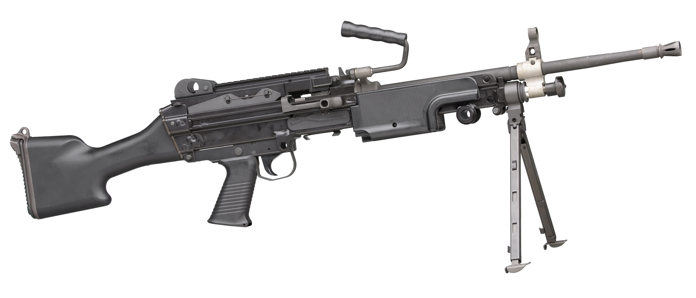

La FN Minimi (Mini-mitrailleuse) est une mitrailleuse légère conçue par la fabrique nationale de HERSTAL en Belgique (FN HERSTAL) dans les années 1970.

Visée en 8 :
| Rafale | Moyen mnémotechnique | Consommation | Distance |
|---|---|---|---|
| Courte | « Salade » | 3 à 5 c | 0 à 50 m |
| Moyenne | « Salade tomate » | 5 à 7 c | 50 à 75 m |
| Longue | « Salade tomate oignon » | 7 à 10 c | 75 m et plus |
Distance : 300 m en tir couché
Cadre d'ordre de l'instructeur de tir :
Distance : 400 m en tir couché
Cadre d'ordre de l'instructeur de tir :
Distance : 500 m en tir couché
Cadre d'ordre de l'instructeur de tir :